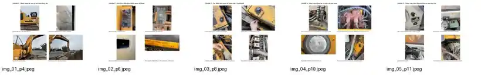

Automotive Engineering Portfolio
From real machines to CAD, CAE & electronics.
Automotive Engineering student at Ho Chi Minh City University of Technology (HCMUT), building hands-on experience through field investigation, Siemens NX, ANSYS and electronics-oriented prototyping in the context of the FuelGuard R&D project.
Siemens NXANSYS MechanicalField SurveySensor IntegrationOBD / CAN fundamentals

